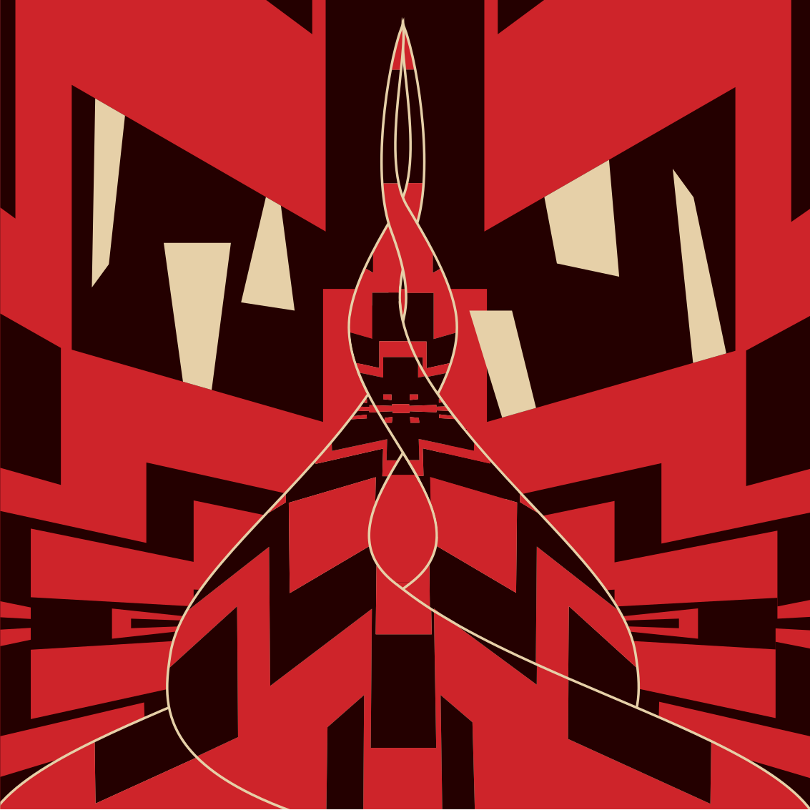
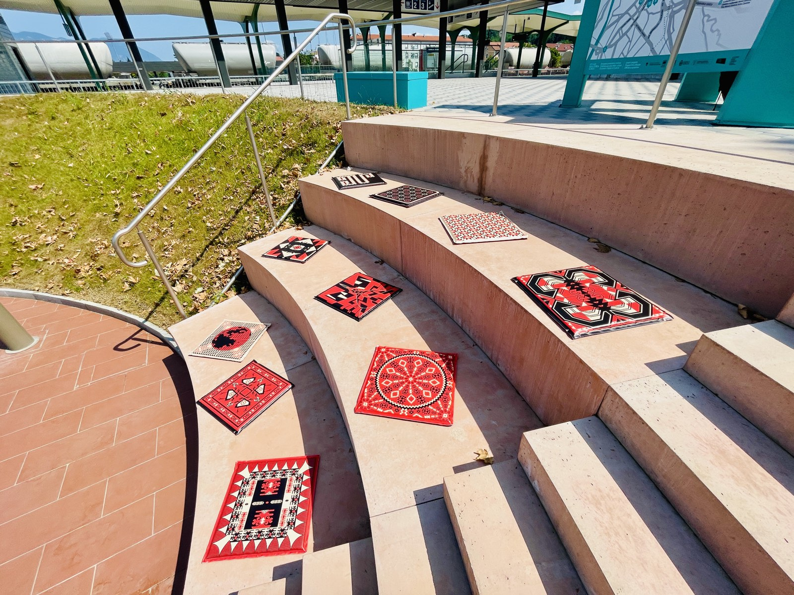

The pattern for this sitting mat was created during a course at Graphic and Interactive Communication, where we explored the traditional čilim pattern through the perspective of Slavic pagan myths. The inspiration for mine was the myth of Baba Roga.
čilim sitting mat
Baba Roga

